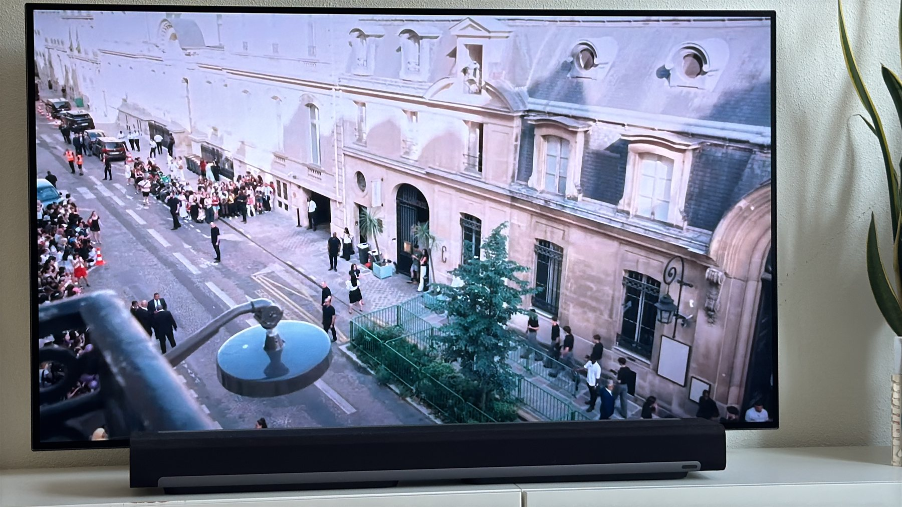
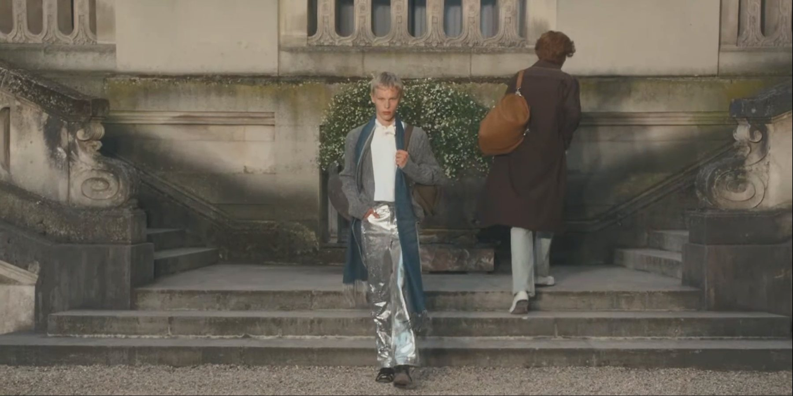
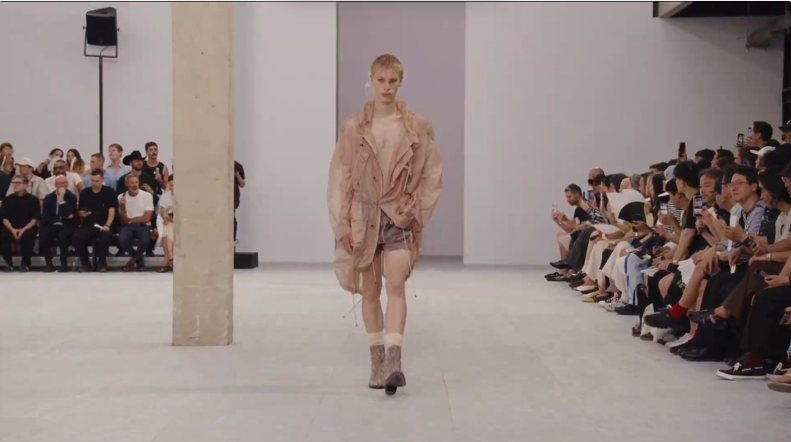
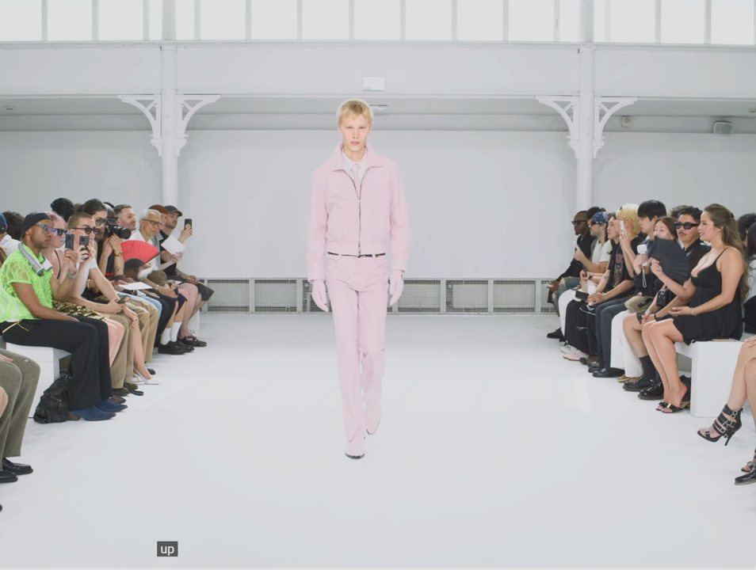

Paris · Amsterdam
Valentijn
Gebbinck
Runway
Spring/Summer 2027 season, Paris
-

24.06.2026
Dior Men
S/S 27 Men’s Show — Paris
-

25.06.2026
Dries Van Noten
S/S 27 Men’s Show — Paris
-

26.06.2026
Ernest W. Baker
S/S 27 Show — Paris
Film
Runway footage
Films are being added shortly.
Portfolio
Paris Fashion Week, June 2026
Profile
Valentijn Gebbinck is a Dutch model represented in Paris by New Madison, with The Movement Models in Amsterdam as his mother agency. He opened his Spring/Summer 2027 season in Paris, walking Dior Men, Dries Van Noten and Ernest W. Baker within three days.
- Height
- 188 cm / 6′2″
- Chest
- 86 cm / 34″
- Waist
- 65 cm / 25½″
- Hips
- 89 cm / 35″
- Shoes
- 44 EU / 10 US
Representation
All bookings through the agencies
Paris
New Madison
View portfolio ↗
Amsterdam
The Movement Models
Mother agency
Industry
Models.com
Profile ↗
Social
@valentijngebbinck
Instagram ↗